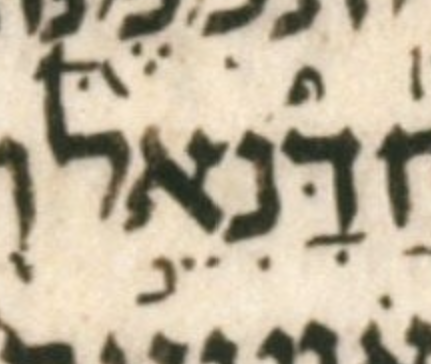

Prev
Next

bcv (link to tanach.us)
ek14:20
MPK
דָּנִ◌ֵ֣אל
qere
דָּנִיֵּ֣אל
at issue
יּ
at issue English
added a dagesh to yod
folio col line
282B 3 6
The MPK has no letter to carry a dagesh for the qere’s yod.